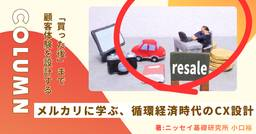
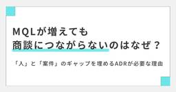
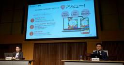
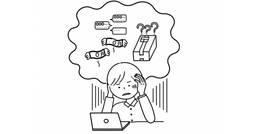
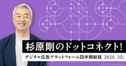

MarkeZine:新着一覧
https://markezine.jp/
翔泳社が運営するマーケター向け専門メディア。MarkeZineはデジタルを中心とした広告・マーケティングに関する情報を多角的な視点で毎日提供します。
フィード
ライト層をミドル・ヘビー層へ、味の素「Cook Do」がフェズと挑んだ購買データ起点の顧客育成とは
MarkeZine:新着一覧
消費者に「愛着」を持たせ、ファンを増やすマーケティングが重要とされる時代、味の素「Cook Do」は顧客育成をテーマにしたユニークな施策を展開した。施策内の広告配信・検証には、フェズ社のデータマーケティングソリューション「Urumo Ads（ウルモ アズ）」を活用。単なるリーチやクリックの計測にとどまらず、「購買リフト」や「ライト層からミドル・ヘビー層への構成比の変化」といった指標でも計測し、顧客育成の確かな手ごたえを得た。本稿では両社に取材のうえ、購買データを起点とした持続的な顧客育成手法と「Urumo Ads」の有用性を探る。
2日前

「買った後」まで顧客体験を設計する――メルカリに学ぶ、循環経済時代のCX設計
MarkeZine:新着一覧
本連載では、持続可能な社会に向けたマーケティングのあり方を企業の実践から考察している。第3回は、モノを次の人へつなぐマーケットプレイスを運営するメルカリを取り上げる。商品の購入後、長く使い、修理し、手放す――最初の持ち主の「購入後」は、次の持ち主の「購入前」へとつながる。この循環を促すには、出品の手間や購入の不安を和らげ、誰もが安心して参加できる仕組みが欠かせない。今回は、メルカリの課題解決やユーザー志向の取り組みを通じ、循環型市場を支える顧客体験と、その鍵を握るAIの活用法を考える。
2日前

MQLが増えても商談につながらないのはなぜ？ 「人」と「案件」のギャップを埋めるADRが必要な理由
MarkeZine:新着一覧
「MQLは増えているのに商談につながらない」「重点企業の1人とは接点を持てても社内の関係者へ広がらない」このような課題が生じるのは、マーケティング担当者がMA上で追う“人”と、営業部門がSFA上で追う“案件”の間に、管理単位のギャップがあるからです。本連載では、人と案件の間をつなぐ機能としてADR（Account Development Representative）に着目します。外資系／日系企業の市場開拓を支援するマーケットワン・ジャパンの熊倉宏紀が、海外での議論をもとに、日本企業でADRを機能させるためのポイントを解説。第1回では、ADRが必要になった背景を考えます。
2日前
頭の中に「言及在庫」は足りていますか？UGCが増えない原因と生み・広げる3つのルール
MarkeZine:新着一覧
自社のSNSアカウントで毎日投稿し、キャンペーンも定期的に実施している。それなのに、商品についての口コミはなかなか増えない。そんな悩みを持つSNS担当者は少なくないだろう。本連載では、企業のSNS戦略設計や運用を支援するホットリンクの増岡宏紀氏が、SNSを使って口コミ（UGC）を生み、広げるための考え方を解説する。初回となる本稿では、口コミのもとになる「言及在庫」と、口コミを増やす3つのルールを紹介。自社のUGCが増えない原因はどこにある？
2日前


値引きに頼らず「また使いたい」を増やす。アソビューがBrazeと実践する、惹きつけるCRMの仕掛け
MarkeZine:新着一覧
顧客をつなぎとめる手段として、クーポンなどの値引き施策に頼りがちになるケースは多いのではないだろうか。そのような企業の課題解決をサポートしているのが、顧客エンゲージメントプラットフォームを提供するBrazeだ。2026年9月開催の「MarkeZine Day 2026 Autumn」では、その活用事例として、レジャー施設などの予約サイトを運営するアソビューの施策を紹介。アソビューの鄭方舟氏、Brazeの石本恭久氏が登壇し、AIを活用したデータ分析や「また使いたい」と思ってもらうための施策について語った。
3日前
グローバル時代の旅行者心理を多様な角度で紐解く～ツーリズムマーケティングへの含意～【論文紹介】
MarkeZine:新着一覧
日本マーケティング学会が刊行する『マーケティングジャーナル』の内容を噛み砕いて、第一線で活躍中のマーケターに向けて紹介する本連載。今回のテーマは「訪日旅行者の心理」です。多くの海外旅行者が日本を訪れ、インバウンド市場への注目が高まる昨今。多様な角度から訪日旅行者のインサイトを理解する研究を紹介していきます。
3日前
競合との消耗戦を抜け出す！北の達人・木下氏が語る「戦わずして売る」マーケティングの極意
MarkeZine:新着一覧
日々のマーケティング業務において、終わりのないレッドオーシャンでの顧客獲得競争に疲弊していないだろうか。本記事では、「実務者が選ぶマーケティング本大賞2026」を受賞した『戦わずして売る技術』の著者であり、北の達人コーポレーション代表取締役社長の木下勝寿氏の特別講演をレポートする。ターゲットを明確にし、他社との奪い合いを避ける「戦わずして売る」ための具体的なノウハウと、実践的なコンセプト設計のフレームワークを解説する。
3日前

【新連載】「明日からEC頼むね」と言われたら？アルビオン榊原氏のEC導入失敗談に学ぶ、絶対条件
MarkeZine:新着一覧
店舗での対面販売を重んじてきたアルビオンで、営業一筋35年の榊原隆之氏が突如EC担当に。知識ゼロゆえに9桁の高額見積もりのシステムを契約・即解約するなど、数々の失敗を重ねながら立ち上げに挑んだ奮闘記をお届けします。第1回は、右も左もわからない「しろうと」が迷走の末に導き出した、システム選定で絶対にブレてはならない「2つの必須条件」と教訓を語ります。
3日前
「見つかる」を「選ばれる」に変えるには？ブランドAIOの戦略設計、購買時AI活用パターン5類型を公開
MarkeZine:新着一覧
ChatGPTに「大広ってどんな会社？」と聞くと、返ってくる答えは概ね正しい。しかし、その説明だけで「大広に頼もう」とはならない——2026年9月に開催された「MarkeZine Day 2026 Autumn」の大広協賛セッションは、こうした気づきから議論が始まった。登壇したのは、大広の原田信宏氏、大広WEDOの鷲北雄介氏、Laboro.AIのAXプロデューサー 菅原耕平氏の3名。本記事では、ブランドの提供価値をAIに正しく理解させる「オントロジー」の実装と、生成AIが介在する購買ジャーニーを踏まえたコミュニケーション設計という、両輪の「ブランドAIO」戦略をレポートする。
4日前

ChatGPT・Google・Amazonが広告の形と運用者を変えた。26年Q3の4大変化と打ち手は
MarkeZine:新着一覧
絶え間ないアップデートの波から「本質的な変化」をどう見極めるか。本連載では、杉原剛氏が四半期の重要動向と実務ヒントをお届けします。2026年Q3のテーマは「『広告の形』と『運用の主体』の入れ替わり」です。本稿では「ChatGPT広告」「ブランドエージェント広告」「管理画面のエージェント化」「広告取引の『配管』再編」という4つのトピックを網羅。急速に進む自動運用にマーケターがどう立ち向かうべきか、「実務ヒント」も必読です。
4日前
「おいしかった」だけでなく「楽しかった」も大切、ヤッホーブルーイングがリアル体験にこだわる理由
MarkeZine:新着一覧
「ビールに味を！人生に幸せを！」というミッションを掲げ、自らをビールを中心としたエンターテインメント事業者と位置づけるヤッホーブルーイング。大型体験拠点の開業などリアルな場への投資を加速させる一方、プロダクトの品質向上にも情熱を注ぐ。独自のポジショニングを維持する同社のマーケティング戦略やこれからについて、マーケティング部門統括ディレクターの仮屋光馬（ニックネーム：カーリー）氏に聞いた。
4日前